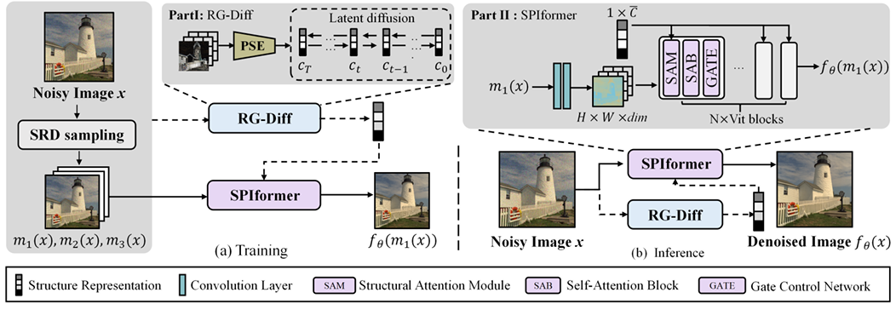

AAAI 2025
Prompt-SID: Learning Structural Representation Prompt via Latent Diffusion for Single-Image Denoising

Abstract
Prompt-SID is a self-supervised single-image denoising framework designed to preserve structural detail. It learns an original-scale structural representation through latent diffusion, injects that representation into a transformer denoiser through structural attention, and uses scale replay training to reduce the resolution gap. Here, “prompt” means a latent structural representation extracted from the noisy image, not a natural-language prompt.
Key results
On the SIDD validation and benchmark sets, Prompt-SID improves PSNR over Neighbor2Neighbor by 0.55 dB and 0.49 dB, and over Blind2Unblind by 0.23 dB and 0.19 dB. The paper also evaluates synthetic and fluorescence imaging denoising.
Citation
@article{li2025promptsid,
title={Prompt-SID: Learning Structural Representation Prompt via Latent Diffusion for Single-Image Denoising},
author={Li, Huaqiu and Zhang, Wang and Hu, Xiaowan and Jiang, Tao and Chen, Zikang and Wang, Haoqian},
journal={Proceedings of the AAAI Conference on Artificial Intelligence},
volume={39}, number={5}, pages={4734--4742},
year={2025}, doi={10.1609/aaai.v39i5.32500}
}